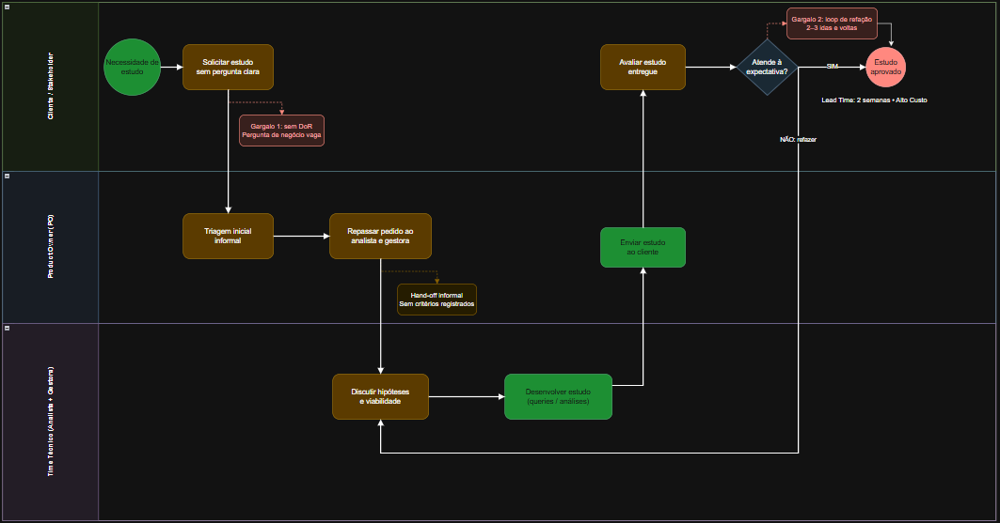
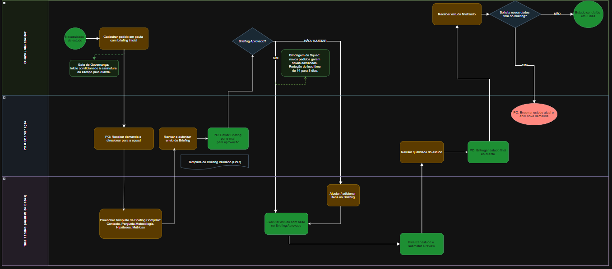

← Voltar para o Portfólio
02 / Product Ownership & Processos
Acelerando a entrega de dados em 64% através do mapeamento de processos AS-IS e TO-BE
1. Contexto & O Problema de Negócio
Demandas de análises e estudos de dados chegavam com requisitos vagos e sem direcionamento claro de negócio. Isso gerava um ciclo recorrente de retrabalho, alto lead time e desalinhamento entre as expectativas dos clientes/stakeholders e as entregas da equipe técnica.
Gargalos Identificados:
- Falta de Alinhamento Inicial: Solicitações abertas sem definição clara de qual decisão o estudo guiaria.
- Escopo Volátil (Scope Creep): Mudanças constantes de escopo durante a fase de desenvolvimento.
- Desperdício de Capacidade: Consultas SQL complexas executadas para responder a perguntas não priorizadas.
- Refação Elevada: Constante necessidade de ajustes pós-entrega por falta de critérios de aceite claros.
2. Mapeamento de Processos: AS-IS vs. TO-BE
Desenhei o fluxo de trabalho em notação BPMN 2.0 no Bizagi para mapear o processo e reorganizar as responsabilidades em raias (Stakeholders/Clientes, PO e Squad de Dados):
Cenário AS-IS (Atual)
Identifiquei um hand-off direto entre a solicitação inicial do cliente e o backlog de desenvolvimento, sem nenhuma etapa de validação de requisitos ou filtro de entrada (Definition of Ready - DoR).

Figura 1: Fluxo de trabalho AS-IS apresentando gargalos de entrada e falta de refinamento prévio.
Cenário TO-BE (Futuro Implementado)
Implementei Gateways de Validação e um filtro de refinamento preliminar conduzido pelo PO antes da liberação de qualquer demanda para a squad técnica.

Figura 2: Fluxo TO-BE reorganizado com raias de responsabilidade, travas de validação e DoR.
3. A Solução de Discovery: Briefing Orientado à Pergunta de Negócio
Para operacionalizar o cenário TO-BE, estruturei um checklist obrigatório de Discovery & DoR com 4 perguntas essenciais antes da criação de qualquer User Story no Jira:
Checklist de Entrada (DoR):
- A Pergunta de Negócio: Qual hipótese ou dúvida exata este estudo precisa responder?
- Impacto na Tomada de Decisão: Qual ação comercial ou operacional será tomada a partir desse resultado?
- Métricas Primárias: Quais KPIs e dimensões são indispensáveis para essa análise?
- Critérios de Aceite: Qual o formato de saída esperado (dashboard, tabela analítica ou relatório sintético)?
4. Estruturação no Jira & Governança Técnica
- Guia de Ancoragem: O briefing aprovado passou a ser acoplado diretamente ao Epic/User Story no Jira.
- Controle de Mudanças: Alterações solicitadas fora da pergunta de negócio original passaram a ser renegociadas com base na matriz inicial de entrada.
- Autonomia da Squad: A equipe técnica passou a ter clareza total das regras de negócio e relacionamentos de tabelas (SQL) antes de iniciar qualquer código.
5. Resultados & Impacto Alcançado
- Redução de Lead Time: Redução do tempo de ciclo total de entrega em 64% (de 14 para 5 dias).
- Zero Retrabalho: Zeradas as solicitações de refação por falta de alinhamento prévio ou ambiguidade nos requisitos.
- Foco & Eficiência: Manutenção da equipe técnica focada 100% em entregas de alto valor agregado.
- Governança Consolidada: Padronização completa da documentação e histórico rastreável de requisitos.